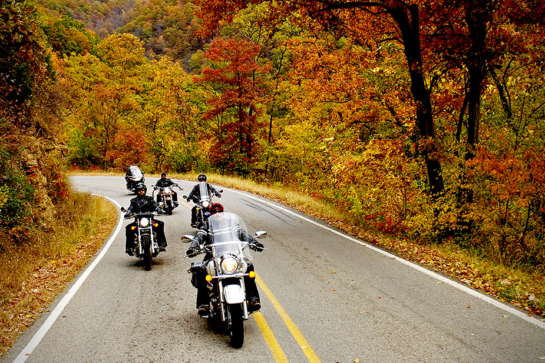

William Kirtlink - Bio
Bio

I was born in Rhode Island in 1983 but moved to California before I was even a year old. Spent the rest of my life there until I joined the Army in 2002. In 2005 I was deployed to Iraq as a Combat Medic in support of the 1-30th Infantry. I deployed again in 2009 as a Combat Medic with the 103rd Field Artillary. When I return to Rhode Island I was transfered to the MedDet where I took over as the clinical NCOIC. I ran the clinic for close to 8 years under the guidence of the DSS and the unit commander and first Sergeant. After 17 years of service, I was medically retired from the Armed Forces as a Sergeant First Class (SFC/E7).
Schooling
- Rhode Island College
- Community College of Rhode Island
- New England Institute of Technology
Hobbies
- Video Games
- Motorcycles
- Home projects